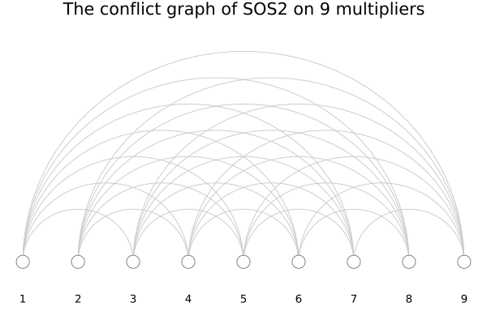
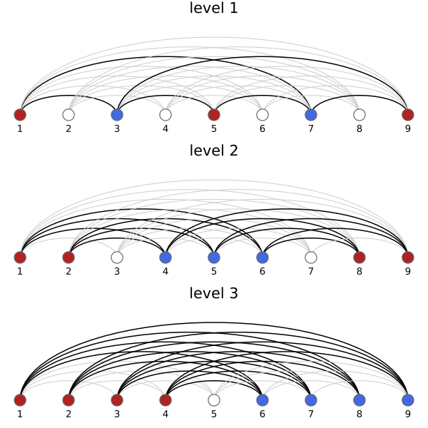
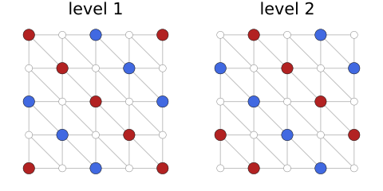
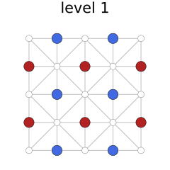
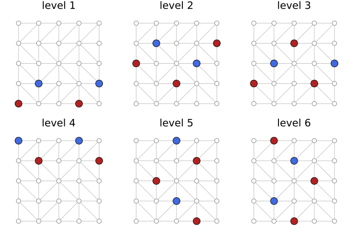
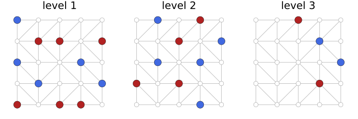

Biclique covers
Most formulations in this package restrict which convex multipliers may be nonzero at the same time, and most of them do so with the same device: a biclique cover of a conflict graph, turned into constraints by add_biclique_cover!. This page explains the device, with the covers that the methods of the package use drawn from the code. It is background for writing a method as described in Extending the package, and for reading Huchette and Vielma (2019) and Lyu, Hicks and Huchette (2025), see References.
Combinatorial disjunctive constraints
A piecewise linear function with the vertices $v_1, \ldots, v_n$ is modeled with convex multipliers $\lambda_1, \ldots, \lambda_n \ge 0$ that sum to one, with $x = \sum_v \lambda_v v$ and $y = \sum_v \lambda_v f(v)$. The convex combination must stay within one segment, so the support of $\lambda$, the set of multipliers that are nonzero, must lie within the vertex set of some segment. The family $\mathcal{S}$ of these vertex sets defines a combinatorial disjunctive constraint:
\[\operatorname{supp}(\lambda) \subseteq S \quad \text{for some } S \in \mathcal{S}.\]
For a univariate function with $n$ breakpoints, the segments give $\mathcal{S} = \{\{1, 2\}, \{2, 3\}, \ldots, \{n - 1, n\}\}$, which is the SOS2 constraint. For a bivariate function on a grid triangulation, the sets are the three corners of each triangle.
The conflict graph
Two multipliers $u$ and $v$ conflict if no set of $\mathcal{S}$ contains both, so they can never be nonzero together. The conflict graph has the multipliers as its vertices and an edge for each conflicting pair. For the SOS2 constraint on nine multipliers, every pair that is not adjacent conflicts:
using PiecewiseLinearOptimport PiecewiseLinearOpt as PLO# Draws the multipliers 1:n on a line, the conflicts between them as arcs, and# a level (L, R) of a cover with L in red and R in blue. The conflicts that the# level separates are drawn in black, the others in grey.function draw_sos2_level(n, (L, R); title = "") p = plot(; title = title, axis = false, grid = false, legend = false, ticks = false, ylims = (-1, (n - 1) / 2 + 0.5), ) θ = range(0, π; length = 40) for u in 1:n, v in (u+2):n separated = (u in L && v in R) || (u in R && v in L) r, c = (v - u) / 2, (u + v) / 2 plot!( p, c .+ r .* cos.(θ), r .* sin.(θ); color = separated ? :black : :gray80, linewidth = separated ? 1.5 : 1, ) end colors = [i in L ? :firebrick : i in R ? :royalblue : :white for i in 1:n] scatter!(p, 1:n, zeros(n); color = colors, markersize = 9, markerstrokecolor = :gray40) annotate!(p, [(i, -0.7, text(string(i), 9)) for i in 1:n]) return pend# With an empty level, every conflict is drawn in greydraw_sos2_level(9, (Int[], Int[]); title = "The conflict graph of SOS2 on 9 multipliers")
The constraint allows exactly the supports that contain no conflicting pair, i.e. the independent sets of the conflict graph, provided that every independent set is contained in a set of $\mathcal{S}$. This holds for the SOS2 constraint and for triangulations, but not for every family: with $\mathcal{S} = \{\{1, 2\}, \{2, 3\}, \{1, 3\}\}$ no pair conflicts, yet $\{1, 2, 3\}$ is not allowed. Huchette and Vielma (2019) call the families where it holds pairwise independent branching representable, and the formulations below are for them.
Independent branching
A level $(L, R)$ is a pair of disjoint sets of multipliers with a binary variable $z$ and the two constraints
\[\sum_{v \in L} \lambda_v \le z, \qquad \sum_{v \in R} \lambda_v \le 1 - z,\]
so that either every multiplier in $L$ or every multiplier in $R$ is zero. The level is valid if it never forbids an allowed support, which requires that no set of $\mathcal{S}$ contains a multiplier of $L$ together with one of $R$: every $u \in L$ must conflict with every $v \in R$. In the conflict graph, $L$ and $R$ form a biclique, a complete bipartite subgraph. A collection of levels forbids exactly the supports that contain a conflicting pair if every conflict is separated by some level, that is if the bicliques cover the edges of the conflict graph.
Huchette and Vielma (2019) show that the formulation from a biclique cover is ideal: the extreme points of its linear relaxation have binary $z$, so a MIP solver gets the strongest possible bounds from it. The number of binary variables equals the number of levels, so the smallest formulation of this kind comes from a minimum biclique cover of the conflict graph, and $\lceil \log_2 |\mathcal{S}| \rceil$ levels are always needed.
For the SOS2 constraint with $d$ segments, $\lceil \log_2 d \rceil$ levels suffice (Vielma and Nemhauser, 2011). The levels of IndependentBranching with the binary reflected Gray code, which coincide with those of LogarithmicIndependentBranching, are:
S = [[i, i + 1] for i in 1:8]cover = PLO._ordered_cdc_cover(S, :brgc)plot( [draw_sos2_level(9, level; title = "level $k") for (k, level) in enumerate(cover)]...; layout = (length(cover), 1), size = (600, 200 * length(cover)),)
Each level separates the conflicts drawn in black, and never two adjacent multipliers. Together the three levels separate all 28 conflicts. The levels are computed by an internal function here; a method uses add_biclique_cover! to turn them into variables and constraints.
Checking a cover
The two conditions, no level separates two multipliers of a common set and every conflict is separated by some level, are easy to check. This is how the tests of the package verify its covers:
function is_valid_cover(S, cover) J = reduce(union, S) for (L, R) in cover if !isdisjoint(L, R) || !issubset(union(L, R), J) return false end for s in S if !isdisjoint(s, L) && !isdisjoint(s, R) return false end end end for u in J, v in J if u < v && !any(s -> u in s && v in s, S) if !any(((L, R),) -> (u in L && v in R) || (v in L && u in R), cover) return false end end end return trueendis_valid_cover(S, cover), is_valid_cover(S, cover[1:2])(true, false)A method that builds a new cover, such as the LinearBranching example in Extending the package, can be checked the same way.
Grid triangulations
For a bivariate function on a grid, the multipliers are the grid points and the allowed supports are the corners of the triangles. The grid methods handle the conflict graph in two parts. The SOS2 constraints along the axes, on the sums of the multipliers in each column and each row, separate every pair of points that are more than one cell apart, and leave a single cell. Within that cell, the two corners joined by the diagonal that is an edge of the triangulation may be nonzero together, and the two corners of the other diagonal may not. The triangle selection is a biclique cover that separates the ends of the non-edge diagonal of every cell, while never separating two points that share a triangle, i.e. two points joined by a grid edge or by a diagonal edge. cell_diagonals gives the two diagonals of a cell.
The levels are drawn below on the triangulation, with $L$ in red and $R$ in blue:
# Draws a grid triangulation given by the directions of its diagonals, and a# level of a triangle selection on itfunction draw_grid_level!(p, nw_se, (L, R); title = "") n_1, n_2 = size(nw_se) .+ 1 for i in 1:n_1, j in 1:n_2 i < n_1 && plot!(p, [i, i + 1], [j, j]; color = :gray75) j < n_2 && plot!(p, [i, i], [j, j + 1]; color = :gray75) end for i in 1:(n_1-1), j in 1:(n_2-1) (a, b), _ = cell_diagonals(nw_se, i, j) plot!(p, [a[1], b[1]], [a[2], b[2]]; color = :gray75) end points = [(i, j) for i in 1:n_1, j in 1:n_2] rest = [q for q in points if !(q in L || q in R)] scatter!(p, first.(rest), last.(rest); color = :white, markerstrokecolor = :gray50, markersize = 5) scatter!(p, first.(L), last.(L); color = :firebrick, markersize = 8) scatter!(p, first.(R), last.(R); color = :royalblue, markersize = 8) plot!( p; title = title, xlims = (0.6, n_1 + 0.4), ylims = (0.6, n_2 + 0.4), aspect_ratio = :equal, axis = false, grid = false, legend = false, ticks = false, ) return pendfunction draw_cover(nw_se, cover; columns = 3) rows = cld(length(cover), columns) panels = [draw_grid_level!(plot(), nw_se, level; title = "level $k") for (k, level) in enumerate(cover)] return plot(panels...; layout = (rows, columns), size = (240 * columns, 240 * rows))end# The K1 triangulation of a 5 × 5 grid, where every cell is split along its# NW-SE diagonal, and the two levels of the K1 methodnw_se = fill(true, 4, 4)draw_cover(nw_se, PLO._triangle_selection_cover(K1(), nw_se); columns = 2)
The non-edge diagonal of every cell runs from SW to NE, and its ends have indices $(i, j)$ and $(i + 1, j + 1)$. The first level separates the points with $i + j$ even, in alternating groups along the diagonals $i + j = \text{const}$, and the second the points with $i + j$ odd. The points that share a triangle, which are the grid neighbors and the ends of the NW-SE diagonals, always have $i + j$ of different parity or lie in the same group, so they are never separated.
In the Union Jack triangulation, the diagonals alternate between neighboring cells, and a single level suffices (Vielma and Nemhauser, 2011):
nw_se = [isodd(i + j) for i in 1:4, j in 1:4]draw_cover(nw_se, PLO._triangle_selection_cover(UnionJack(), nw_se); columns = 1)
For a triangulation without a pattern, SixStencil uses three levels for the cells whose non-edge diagonal runs from SW to NE and three for the others, taking every third diagonal line of cells in one level so that the groups along a line can alternate:
using Randomnw_se = rand(MersenneTwister(4), Bool, 4, 4)draw_cover(nw_se, PLO._triangle_selection_cover(SixStencil(), nw_se))
GreedyTriangleSelection instead places the ends of each non-edge diagonal on opposite sides of the first level where neither end is then on the same side as a neighbor of the other, and keeps the best of several random orders of the cells. On the same triangulation it needs fewer levels:
draw_cover(nw_se, PLO._triangle_selection_cover(GreedyTriangleSelection(), nw_se))
The validity check from above applies to triangle selections with the sets $\mathcal{S}$ given by the triangles, when the conflicts that the axis constraints handle are left out. The tests of the package check every triangle selection on random triangulations in this way.
Optimal covers
The smallest number of levels for a triangle selection is found by OptimalTriangleSelection, which solves a mixed-integer program for a cover with $t$ levels for increasing $t$: binary variables say for each point and level whether the point is in $L$, in $R$ or in neither, with constraints that no triangle edge has its ends on opposite sides and that every non-edge diagonal is separated by some level. OptimalIndependentBranching solves the same program for the whole conflict graph, without the SOS2 constraints along the axes, which gives the smallest number of binary variables overall but is only tractable for small grids. Both programs are computed once for each triangulation and cached.
For univariate functions, the Gray code and biclique cover constructions of Lyu, Hicks and Huchette (2025) in IndependentBranching extend the logarithmic cover of SOS2 to segments that may be disjoint, as in discontinuous functions, or share several points, as in relaxations. Their later work on junction trees gives covers for more general families of sets.